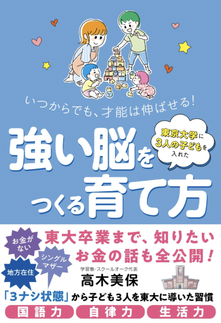

高木 美保（みほ先生）
スクールオーク塾長／親の学習塾 主宰
30年間、親子を見てきました。
国立大学で発達認知学・言語発達学・大脳生理学を専攻。教員、河合塾指導員を経て、金沢・片町でスクールオークを開設しました。
3人子ども全員 東大合格
（文Ⅰ二人・理Ⅰ一人）
（文Ⅰ二人・理Ⅰ一人）
30年塾長としての指導実績
91%第一志望 合格率
Story
シングルで、3人の子ども全員が東大へ。
お金がない・地方在住・シングルマザーという「3ナシ状態」から、3人の子どもを東大に送り出しました。子どもたちに「勉強しなさい」と言ったことは、一度もありません。その子育ての習慣は、著書『強い脳をつくる育て方』にまとめています。
塾長として30年、1,000組以上の親子に寄り添ってきました。親の学習塾では、自身の子育てと、多くのご家庭の姿をもとに、あなたの家庭に合う関わり方を一緒に考えます。
Policy
大切にしていること
子どもを直接「変える」のではない
親の関わり方と家庭環境を整え、子どもが自分で動ける余白をつくります。
全部を一度に変えない
「今週わが家で変えることはひとつだけ」。続けられる単位まで小さくします。
わが子に合わせる
4つの個性タイプをもとに、その子に響く言葉と関わり方を見つけます。

Book & Media
著書・メディア掲載
著書『いつからでも、才能は伸ばせる！強い脳をつくる育て方』（自由国民社）。
- 毎日新聞2024年3月7日 地方版「女手一つ、3子東大へ 経験談本出版」
- 北國新聞2024年3月24日
- 北日本新聞教育セミナーの様子
- 日刊スポーツ「ブルーゾーン」書籍紹介
- 幻冬舎ゴールドオンライン連載「強い脳をつくる育て方」
- 月刊 東京大学新聞2025年2月25日 書籍掲載
Instagram：kanazawa_juku（フォロワー1.9万人・毎週日曜21時にインスタライブ）
まずは、今の関わり方を知ることから。
無料の「親の習慣」チェックリストをLINEでお送りしています。チェックした数を送っていただくと、私が直接コメントをお返しします。